Bulk pahtway analysis
Svandis Saemundsdottir
6/24/2019
This is a step by step my pathway analysis of the bulk sequencing of reprogrammed mouse dendritic cells
library(edgeR)
library(pheatmap)
library(genefilter)
library(clusterProfiler)
library(org.Mm.eg.db)
library(gplots)
library(ggplot2)1 Read in the data and remove sampels that were irregular according to correlation:
counts <- read.delim("~/Documents/Lund/Vor2018_Haust2014/Data/count_results_3/entrenzID.final.matrix.txt", row.names = 1)
counts <- counts[c(38:44,21:37,13:20,1:12,45:48)]
counts <- counts[-c(4, 6,10,14,18,22,34,37,39:40,45)]
sampleCondition <- c(rep("mef", 5), rep("day_5", 4),
rep("day_7", 3), rep("day_8", 3), rep("day_9", 3),
rep("day_11", 4), rep("day_15", 4),
rep("cDC1",4), rep("cDC2", 4), rep("pDC", 3))
head(counts)2 Filtering lowly expressed genes:
2.1 Filter vol 1:
Using genefilter package we filter out genes with row variance less or equal the 1
rv <- rowVars(as.matrix(counts))
counts <- counts[rv >= 1,]
nrow(counts)## [1] 193702.2 Filter vol 2:
Filter out genes expressed in ….
subset.test1 <- c()
for (j in 1:dim(counts)[1]){
x <- as.numeric(counts[j,])
list.cell <- unique(as.character(sampleCondition))
list.all <- c()
for (i in list.cell){
list.all <- c(list.all, sum(x[which(sampleCondition %in% i)]!=0))
}
if (sum(list.all >= 2) >= 7) {
subset.test1 <- c(subset.test1, TRUE)
}
else{
subset.test1 <- c(subset.test1, FALSE)}
}
counts = counts[subset.test1,]
nrow(counts)## [1] 149463 EdgeR
Using EdgeR package to find differently expressed gene
cds <- DGEList(counts=counts,group=sampleCondition)
cds <-calcNormFactors(cds)
cds <- estimateDisp(cds)## Design matrix not provided. Switch to the classic mode.3.1 Pairwise comparsion
exact_test <- function(x,y, pvalue, logFC) {
test_control <- exactTest(cds, pair=c(x,y))
de_test_control <- test_control$table
de_test_control$p.adjust <- p.adjust(de_test_control$PValue, "BH")
de_test_control<- de_test_control[de_test_control$p.adjust < pvalue,]
de_test_control <- de_test_control[abs(de_test_control$logFC) > logFC,]
}Day 5 vs Mefs
ded5_mef <- exact_test("mef", "day_5", 0.05, 0.5)
head(ded5_mef)Day 9 vs day 5
ded9_d5 <- exact_test("day_5", "day_9", 0.05, 0.5)
head(ded9_d5)Day 15 vs day 9
ded15_d9 <- exact_test("day_9", "day_15", 0.05, 0.5)
head(ded15_d9)Day 9 vs cDC1
ded9_cDC1 <- exact_test("cDC1", "day_9", 0.05, 0.5)
head(ded9_cDC1)3.2 Heatmap of DE genes:
cpm_counts_sig_mef_idc_upDown <- cpm(cds)
counts_scaled_sig_mef_id_upDown <-t(scale(t(cpm_counts_sig_mef_idc_upDown)))
MinMax <- function(data, min, max){
data2 <- data
data2[data2 < min] = min
data2[data2 > max] = max
return(data2)
}
counts_scaled_sig_mef_id_upDown = MinMax(counts_scaled_sig_mef_id_upDown, -2.5, 2.5)
mycol <- colorpanel(100, "purple", "black", "yellow")
plot_heatmaps <- function(x, x_dataFrame) {
plot <- pheatmap(as.matrix(counts_scaled_sig_mef_id_upDown[rownames(x),rownames(x_dataFrame)]),
col=mycol, show_colnames = F, annotation_col=x_dataFrame,
labels_col = x_dataFrame[,1], cutree_rows = 2, annotation_names_row = F,
show_rownames = F, cluster_cols = F,
clustering_distance_rows = "correlation",
clustering_method = "ward.D2", annotation_names_col=F)
return(plot)
}Day 5 vs Mefs
ded5_mef_dataframe <- as.data.frame(as.character(sampleCondition[1:9]), row.names = colnames(cpm_counts_sig_mef_idc_upDown[,1:9]))
colnames(ded5_mef_dataframe) <- "Cell_type"
plot_heatmaps(ded5_mef, ded5_mef_dataframe)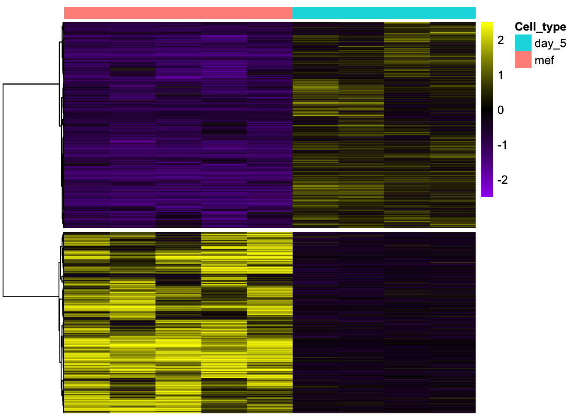
Day 9 vs day 5
ded9_d5_dataframe <- as.data.frame(as.character(sampleCondition[c(6:9, 16:18)]), row.names = colnames(cpm_counts_sig_mef_idc_upDown[,c(6:9, 16:18)]))
colnames(ded9_d5_dataframe) <- "Cell_type"
plot_heatmaps(ded9_d5, ded9_d5_dataframe)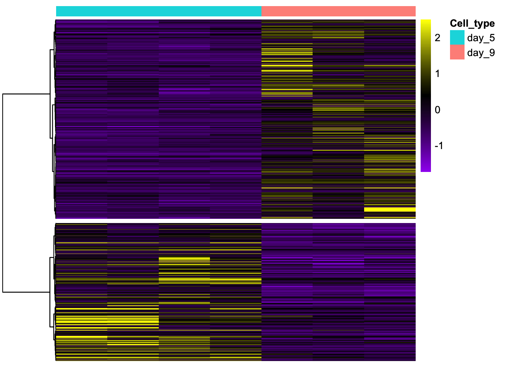
Day 15 vs day 9
d15_d9_dataframe <- as.data.frame(as.character(sampleCondition[c(16:18, 23:26)]), row.names = colnames(cpm_counts_sig_mef_idc_upDown[,c(16:18, 23:26)]))
colnames(d15_d9_dataframe) <- "Cell_type"
plot_heatmaps(ded15_d9, d15_d9_dataframe)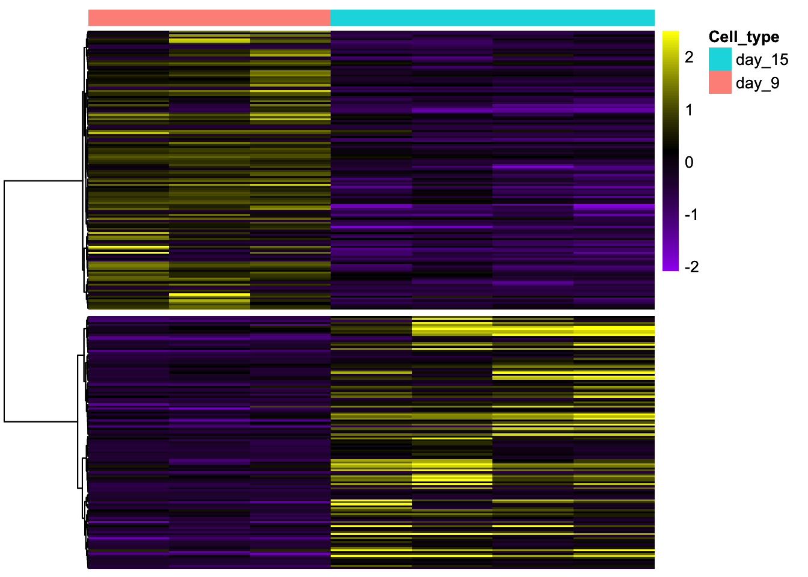
Day 9 vs cDC1
d9_cDC1_dataframe <- as.data.frame(as.character(sampleCondition[c(16:18,27:30)]), row.names = colnames(cpm_counts_sig_mef_idc_upDown[,c(16:18,27:30)]))
colnames(d9_cDC1_dataframe) <- "Cell_type"
plot_heatmaps(ded9_cDC1, d9_cDC1_dataframe)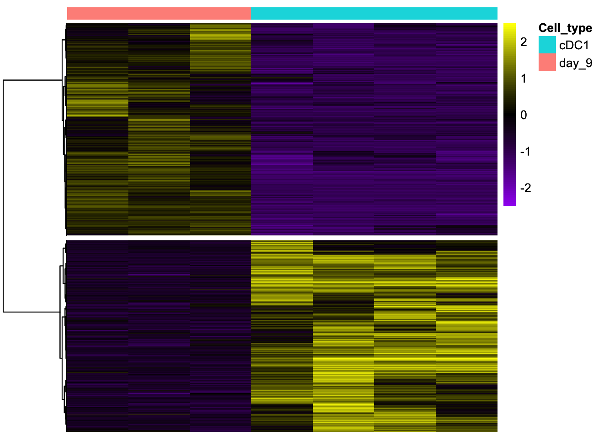
4 Pathway analysis
4.1 Define cluster
define_cluster <- function(x, logFC, name) {
cluster <- list()
cluster$Patways_up <- rownames(x[x$logFC > logFC, ])
cluster$Patways_down<- rownames(x[x$logFC < -logFC, ])
#write.table(rownames(x[abs(x$logFC) > logFC,]), file=paste0("gene_lists_results/", name ,"_", logFC, ".txt"), sep="\t", quote = F, row.names = F, col.names=F)
return(cluster)
}Day 5 vs Mefs
Numer of genes up in day 5 compared to Mef
d5_mef_cluster <- define_cluster(ded5_mef, 0.5, name="d9_d5")
length(d5_mef_cluster$Patways_up) ## [1] 3621Numer of genes down in day 5 compared to Mef
length(d5_mef_cluster$Patways_down)## [1] 3186Day 9 vs day 5
Numer of genes up in day 9 compared to day 5
d9_d5_cluster <- define_cluster(ded9_d5, 0.5, name="d9_d5")
length(d9_d5_cluster$Patways_up) ## [1] 295Numer of genes down in day 9 compared to day 5
length(d9_d5_cluster$Patways_down)## [1] 204Day 15 vs day 9
Numer of genes up in day 15 compared to day 9
d15_d9_cluster <- define_cluster(ded15_d9, 0.5, name="d9_d5")
length(d15_d9_cluster$Patways_up) ## [1] 127Numer of genes down in day 15 compared to day 9
length(d15_d9_cluster$Patways_down)## [1] 140Day 9 vs cDC1
Numer of genes up in day 9 compared to cDC1
d9_cDC1_cluster <- define_cluster(ded9_cDC1, 0.5, name="d9_d5")
length(d9_cDC1_cluster$Patways_up) ## [1] 4150Numer of genes down in day 9 compared to cDC1
length(d9_cDC1_cluster$Patways_down)## [1] 37424.2 GO Pathway analysis Using clusterProfiler:
pathway_analysis <- function(x, ont, name) {
results <- compareCluster(geneClusters = x, fun="enrichGO", OrgDb="org.Mm.eg.db", ont=ont, qvalueCutoff=0.05)
saveRDS(results, file=paste0("compareClusters/", name, "_", ont, ".Rdata"))
return(results)
}Cellular component
Day 5 vs Mefs
#d5_mef_CC <- pathway_analysis(d5_mef_cluster, "CC", name="d5_mef")
d5_mef_CC <- readRDS("compareClusters/d5_mef_CC.Rdata")
dotplot(d5_mef_CC, showCategory=5) + theme(axis.text.x = element_text(angle = 45, hjust = 1))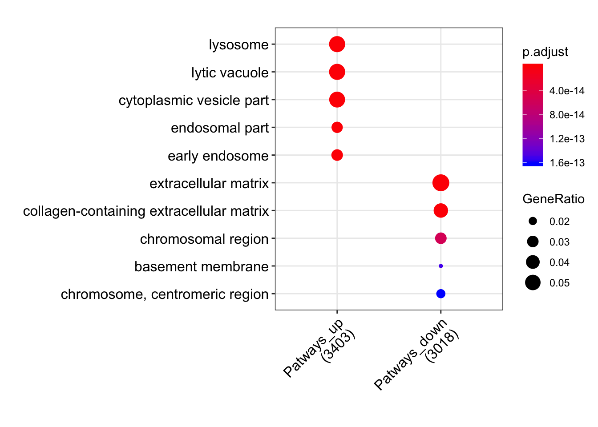
Day 9 vs day 5
#d9_d5_CC <- pathway_analysis(d9_d5_cluster, "CC", name="d9_d5")
d9_d5_CC <- readRDS("compareClusters/d9_d5_CC.Rdata")
dotplot(d9_d5_CC, showCategory=5) + theme(axis.text.x = element_text(angle = 45, hjust = 1))
Day 15 vs day 9
#d15_d9_CC <- pathway_analysis(d15_d9_cluster, "CC", name="d15_d9")
d15_d9_CC <- readRDS("compareClusters/d15_d9_CC.Rdata")
dotplot(d15_d9_CC, showCategory=5) + theme(axis.text.x = element_text(angle = 45, hjust = 1))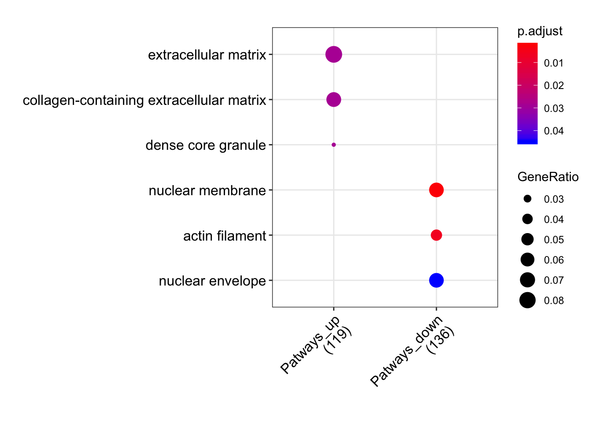
Day 9 vs cDC1
#d9_cDC1_CC <- pathway_analysis(d9_cDC1_cluster, "CC", name="d9_cDC1")
d9_cDC1_CC <- readRDS("compareClusters/d9_cDC1_CC.Rdata")
dotplot(d9_cDC1_CC, showCategory=5) + theme(axis.text.x = element_text(angle = 45, hjust = 1))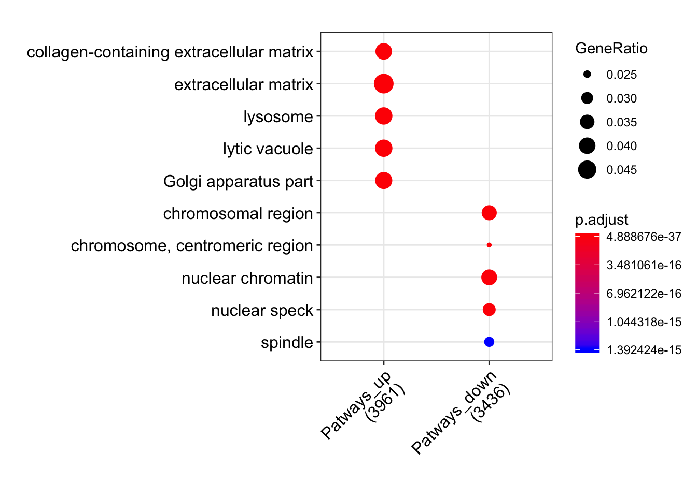
Biological process
Day 5 vs Mefs
#d5_mef_BP <- pathway_analysis(d5_mef_cluster, "BP", name="d5_mef")
d5_mef_BP <- readRDS("compareClusters/d5_mef_BP.Rdata")
dotplot(d5_mef_BP, showCategory=5) + theme(axis.text.x = element_text(angle = 45, hjust = 1))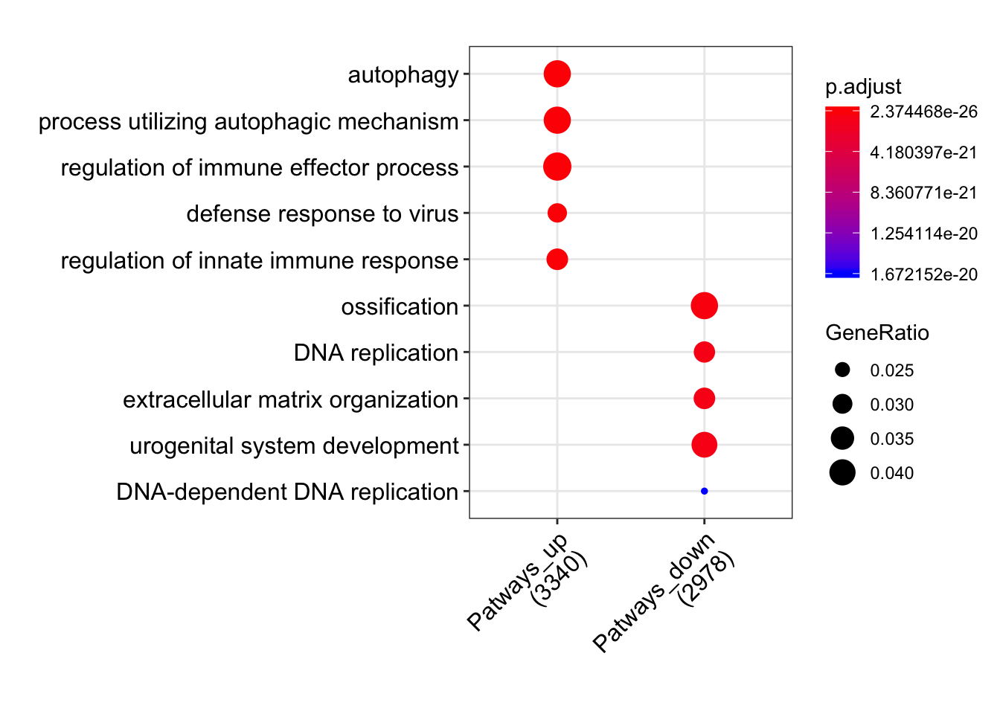
Day 9 vs day 5
#d9_d5_BP <- pathway_analysis(d9_d5_cluster, "BP", name="d9_d5")
d9_d5_BP <- readRDS("compareClusters/d9_d5_BP.Rdata")
dotplot(d9_d5_BP, showCategory=5) + theme(axis.text.x = element_text(angle = 45, hjust = 1))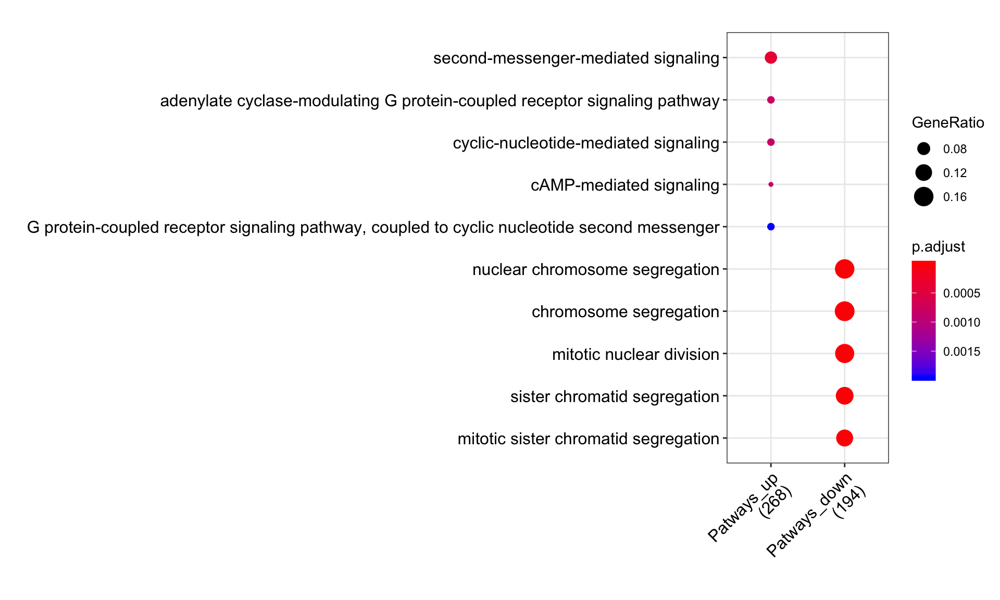
Day 15 vs day 9
#d15_d9_BP <- pathway_analysis(d15_d9_cluster, "BP", name="d15_d9")
d15_d9_BP <- readRDS("compareClusters/d15_d9_BP.Rdata")
dotplot(d15_d9_BP, showCategory=5) + theme(axis.text.x = element_text(angle = 45, hjust = 1))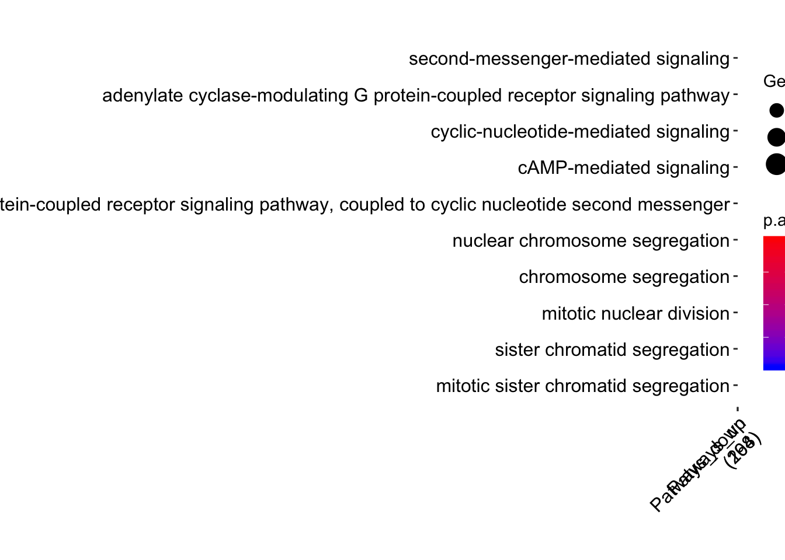
Day 9 vs cDC1
#d9_cDC1_BP <- pathway_analysis(d9_cDC1_cluster, "BP", name="d9_cDC1")
d9_cDC1_BP <- readRDS("compareClusters/d9_cDC1_BP.Rdata")
dotplot(d9_cDC1_BP, showCategory=5) + theme(axis.text.x = element_text(angle = 45, hjust = 1))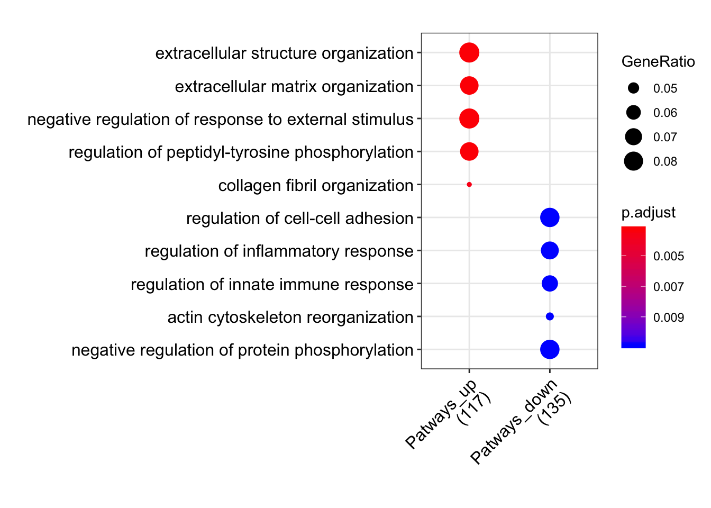
4.3 KEGG Pathway analysis Using clusterProfiler:
KEGG_pathway_analysis <- function(x, name) {
results <- compareCluster(geneClusters = x, fun="enrichKEGG", organism="mmu", keyType="kegg", qvalueCutoff=0.05)
saveRDS(results, file=paste0("compareClusters/", name, "_", "KEGG.Rdata"))
return(results)
}Day 5 vs Mefs
#d5_mef_KEGG <- KEGG_pathway_analysis(d5_mef_cluster, name="d5_mef")
d5_mef_KEGG <- readRDS("compareClusters/d5_mef_KEGG.Rdata")
dotplot(d5_mef_KEGG, showCategory=5) + theme(axis.text.x = element_text(angle = 45, hjust = 1))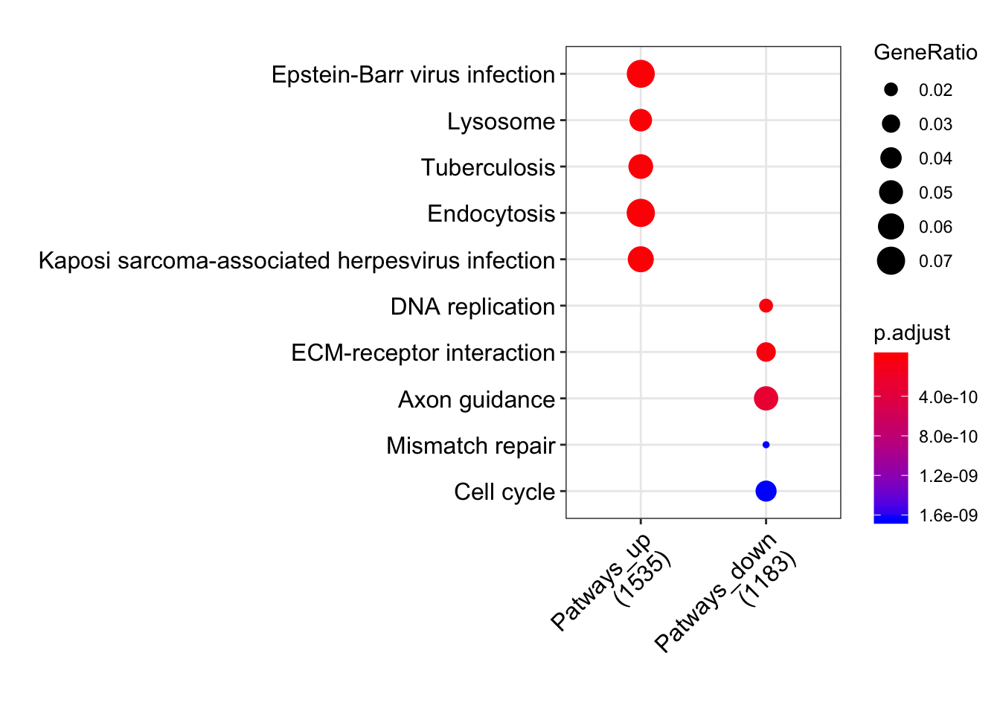
Day 9 vs day 5
#d9_d5_KEGG <- KEGG_pathway_analysis(d9_d5_cluster, name="d9_d5")
d9_d5_KEGG <- readRDS("compareClusters/d9_d5_KEGG.Rdata")
dotplot(d9_d5_KEGG, showCategory=5) + theme(axis.text.x = element_text(angle = 45, hjust = 1))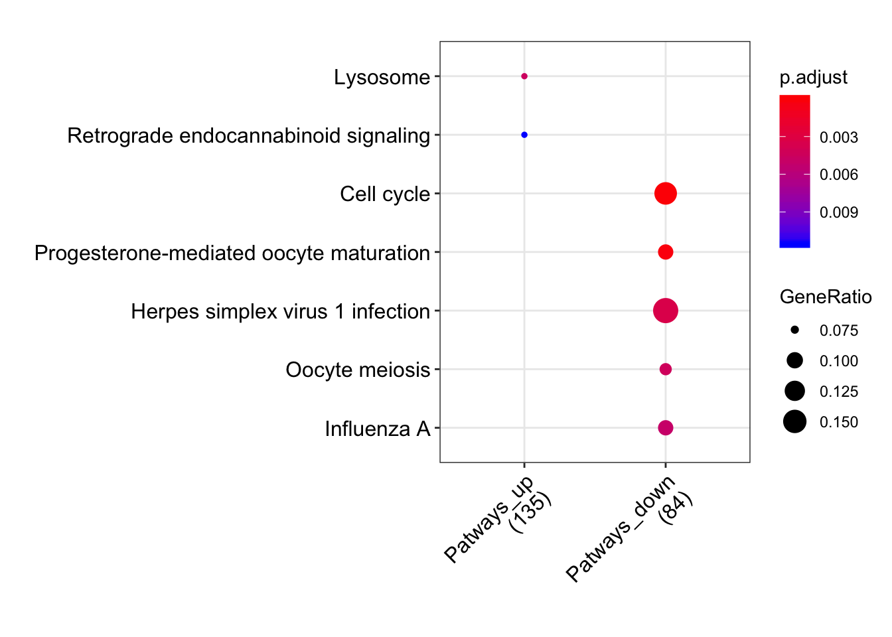
Day 15 vs day 9
No enrichemnt found
# d15_d9_KEGG <- KEGG_pathway_analysis(d15_d9_cluster, name="d15_d9")
# dotplot(d15_d9_KEGG, showCategory=5) + theme(axis.text.x = element_text(angle = 45, hjust = 1))Day 9 vs cDC1
d9_cDC1_KEGG <- KEGG_pathway_analysis(d9_cDC1_cluster, name="d9_cDC1")
dotplot(d9_cDC1_KEGG, showCategory=5) + theme(axis.text.x = element_text(angle = 45, hjust = 1))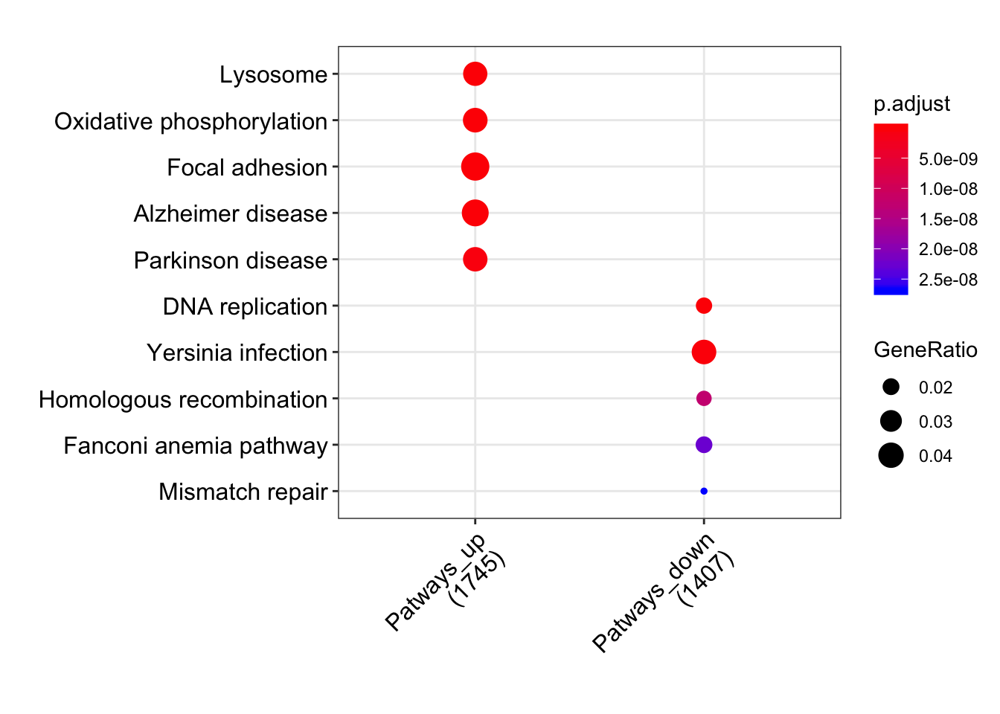